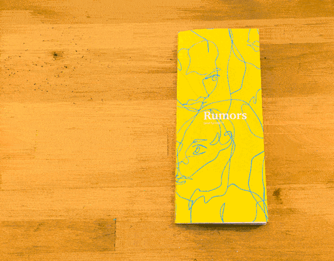
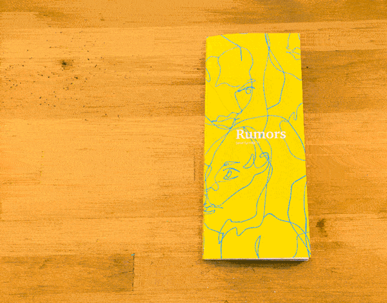
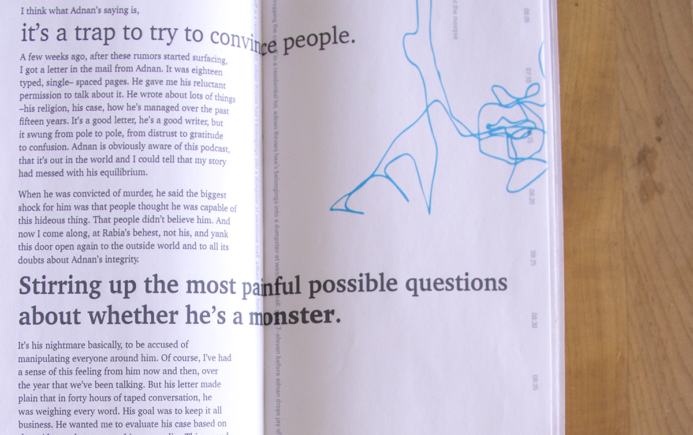
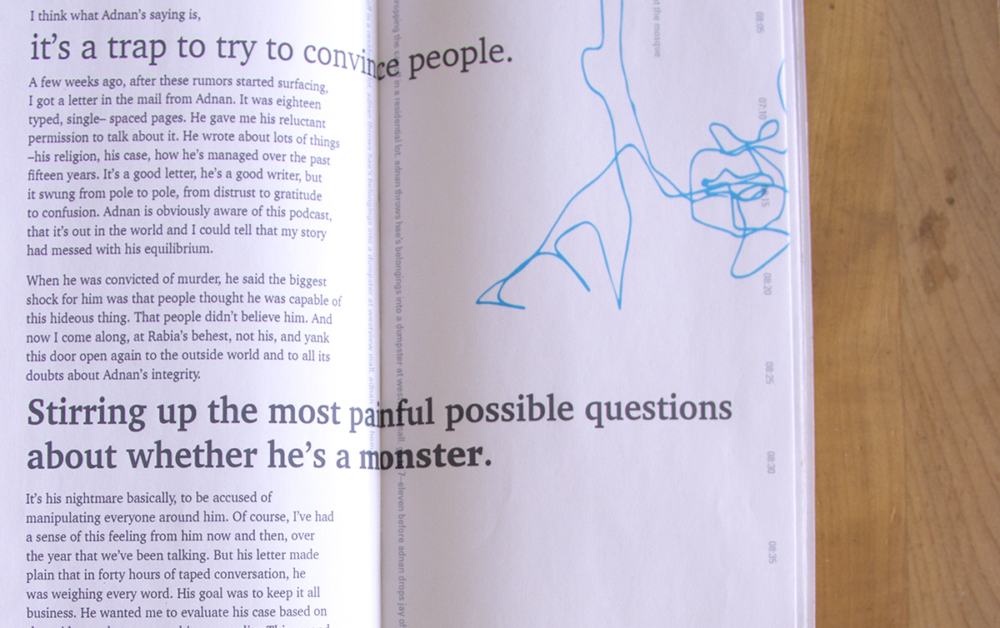

Participating in creating ()
talk about redlining, act of coloring.
Adult coloring books have become popular stress relievers; the methodical and () action of coloring has a calming effect.
By subverting the innocent nature with the story of redlining into a coloring
<< Back


 


 
